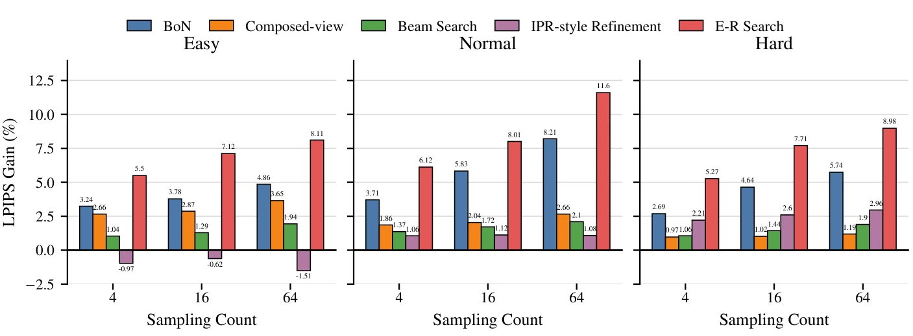
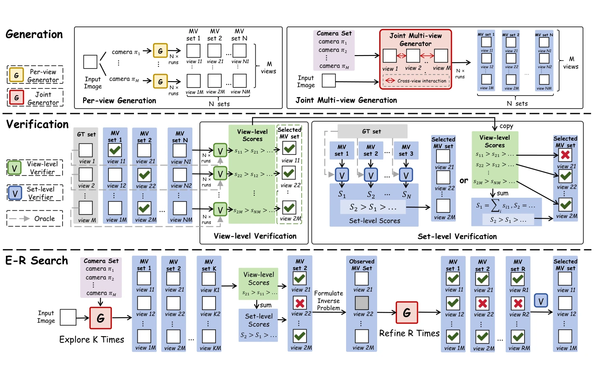
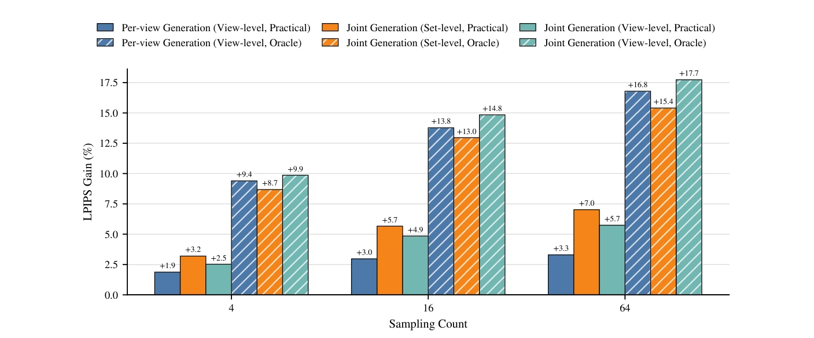
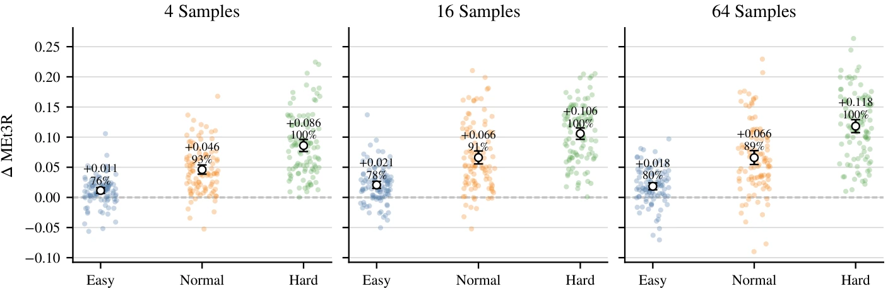
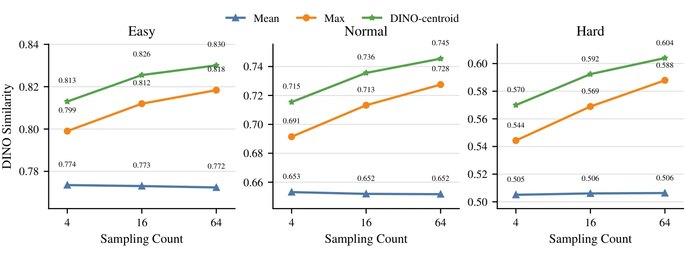
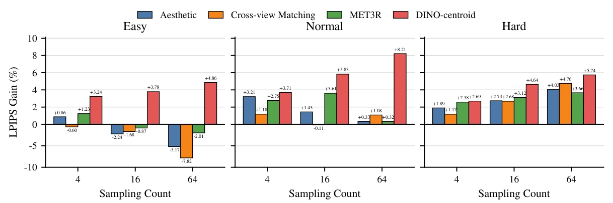
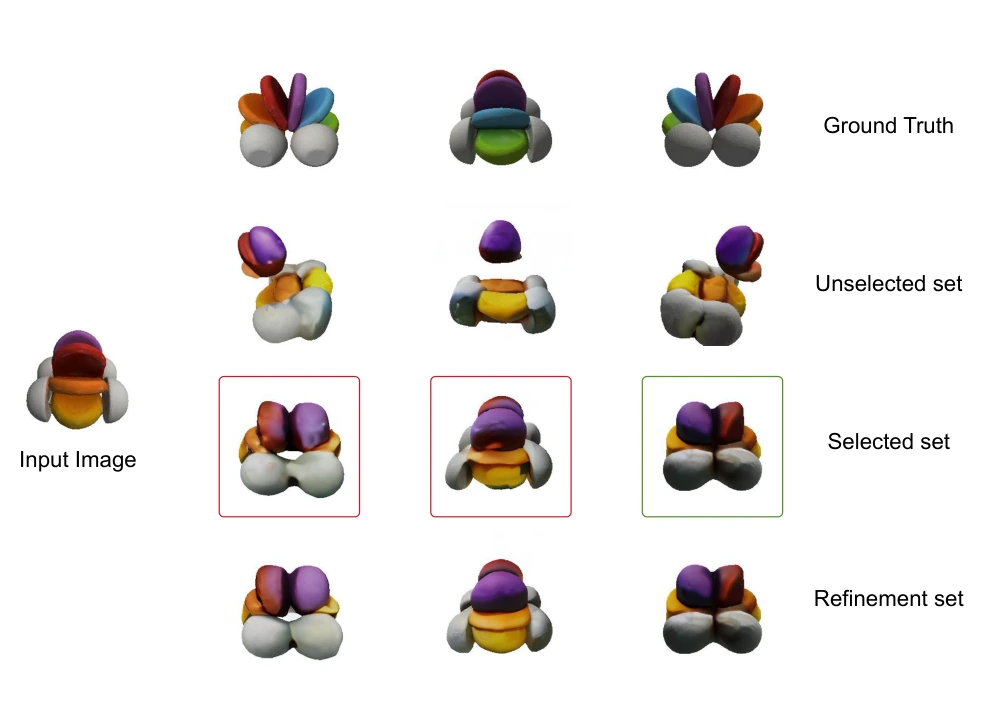
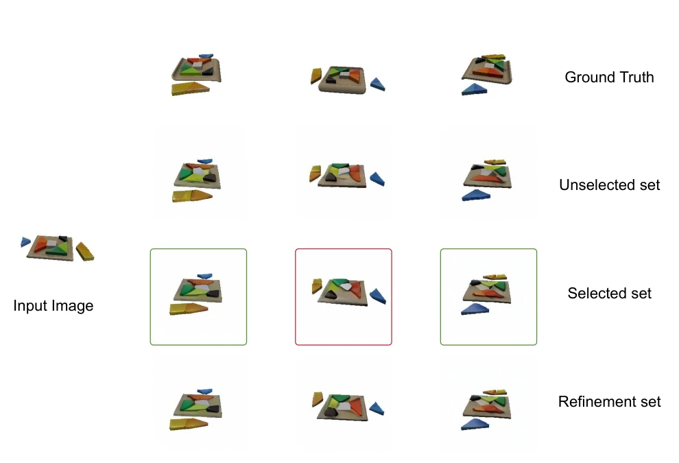

01EXPLORE
Generate K multi-view sets
Sample multiple complete candidate sets from a frozen joint multi-view diffusion model.
Generation, Verification, and Search
How can we spend additional inference compute effectively when generated views must remain consistent? We study the interplay of joint generation, cross-sample verification, and targeted refinement.
Anonymous project page · Based on the submitted manuscript

Multi-view outputs are structured: improving each view independently can sacrifice consistency across the set. Our study connects three decisions that are often treated separately.

The interplay between the generation paradigm, verification granularity, and test-time search strategy. Source: Paper, Figure 1.
Compare independent per-view sampling with joint multi-view diffusion.
Study the trade-off between view-level quality and set-level coherence.
Balance exploration of complete samples with selective repair of uncertain views.
Our algorithm is motivated by controlled observations about scaling, verification, and consistency.
Across the evaluated model families, joint multi-view models exhibit larger relative LPIPS improvements from additional candidate samples under view-level Oracle selection.
The comparison is observational: models also differ in backbone and training distribution.

Under practical verification, selecting a complete jointly generated set outperforms independently composing views. MEt3R measurements show that view composition consistently worsens cross-view coherence.
Oracle view selection reverses the reconstruction-quality trend, exposing opportunities for localized improvement.

DINO-centroid averages normalized DINO representations for corresponding viewpoints. Its centroid moves closer to the ground-truth feature as the candidate pool grows in the evaluated settings.
This motivates a low-cost verifier for both set selection and uncertain-view detection.

Preserve the relationships that joint diffusion has learned, while spending extra compute on the views that need it most.
Sample multiple complete candidate sets from a frozen joint multi-view diffusion model.
Use set-level DINO-centroid scores to choose a coherent sample and view-level scores to locate uncertainty.
Retain reliable views as observations; use Posterior-DDIM under the frozen joint prior to regenerate uncertain views.
K exploration trajectories plus R refinement trajectories are compared against N full-generation equivalents.
No generator finetuning. The approach operates at inference time using frozen pretrained multi-view models.
Conditional regeneration. Reliable views act as measurements in a diffusion inverse problem rather than being independently recomposed.
LPIPS improvements relative to a single generation, evaluated on fixed Easy, Normal, and Hard subsets of the GSO benchmark. Larger is better.
DINO-centroid provides a low-cost practical ranking signal across sampling budgets and object difficulty.

Figure 3 · Practical verifier comparisonUnder identical refinement settings, DINO-based uncertain-view identification improves over random selection.
Using the same reconstruction pipeline on the Normal subset, E-R Search improves both geometric metrics over the frozen SyncDreamer baseline and Best-of-N selection.
| Method | Chamfer ↓ | Volume IoU ↑ |
|---|---|---|
| SyncDreamer | 0.0274 | 0.537 |
| Best-of-N | 0.0265 | 0.551 |
| E-R Search | 0.0252 | 0.568 |
Example cases from the paper compare the ground truth, an unselected set, the verifier-selected set, and the result after targeted refinement.


Detailed formulations, controlled experiments, implementation settings, and supplementary results are available in the manuscript.